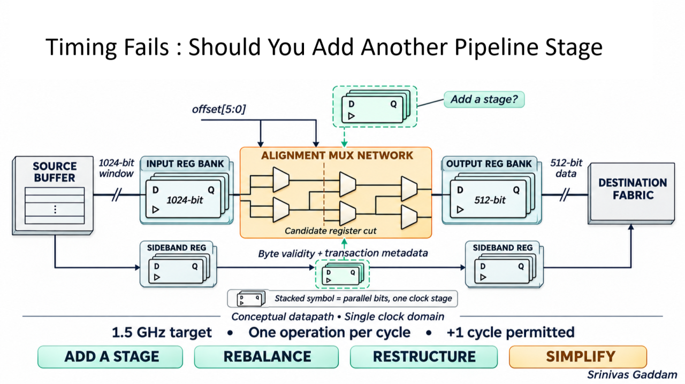

ENGINEERING NOTES BY SRINIVAS GADDAM
Good architecture
starts with the
right trade off.
Explore SoC design decisions across power, performance, area, latency and scalability. Practical articles, explicit assumptions and an interactive lab.
Buffer
Fabric
ONE SYSTEM.
LATEST ARTICLE · SOC ARCHITECTURE / PART 2
Closing timing is a system decision.

· 9 min read (estimated)
Timing Fails: Should You Add Another Pipeline Stage?
Compare an added stage, register rebalancing, logic restructuring and simpler functionality using a DMA alignment case study.
Read the article →START WITH THE QUESTION
From architecture to implementation.
Work through the constraints, compare the options, and understand what would change the decision.
Wider Datapath or Higher Frequency?
· 9 min read (estimated)
A 512 bit datapath needs twice its useful throughput. Compare width, frequency and parallelism.
Explore ↗Try the trade off yourself.
Change workload assumptions, shared bandwidth, power and area. See where each architecture becomes limited.
Explore ↗PCIE GEN6 / GEN7 SERIES
From power on to a usable device.
Read the device journey
- Power, reset and device discovery
- Link training and reaching L0
- Configuration and enumeration
- BAR allocation and usable MMIO
PCIe Endpoint Visible but Unusable
· 8 min read (estimated)
Trace BAR allocation, bridge windows and the address map a driver needs.
Read full article →THE ENGINEER BEHIND THE NOTES
Implementation depth.
System perspective.
Over 17 years working across SoC design, subsystem architecture and high speed interfaces. These notes connect architectural reasoning with the constraints of building silicon.
Meet Srinivas →Keep learning with the newsletters.
Choose the series that matches your work.